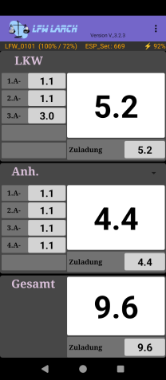

LFW LARCHLuftfederwaage
Die aktuelle App direkt aufs Handy laden – ohne Play Store.
App installierenVersion V_3.4.14
Direkter APK-Download · GitHub-Release

Installation
Nach dem Download die APK in der Benachrichtigung oder unter „Downloads“ öffnen. Wenn Android blockiert: „Unbekannte Apps“ / Installation aus dem Browser erlauben, dann erneut öffnen. Der Button lädt die Datei direkt von dieser Seite (nicht über GitHub-Umleitung).
Neu in V_3.4.14
Update vom 07.08.2026 – Safe-Loc Speichern:
- Anhänger-Kennzeichen nur bei wirklich verbundenem Anhänger
- Labels und Eingabefelder korrigiert (Kunde + LKW wieder sichtbar)
- Speicher-Panel erscheint erst nach „Safe Loc.“